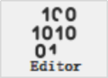
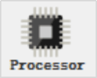
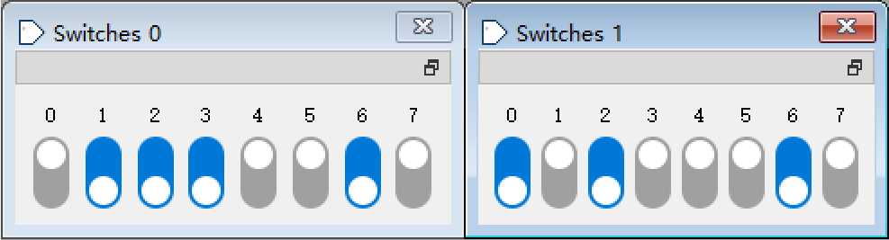

RISC-V汇编语言实验
实验目的
-
熟悉RISC-V汇编语言，能够用汇编语言编写简单的程序；
-
熟悉RISC-V汇编器，能够使用汇编器将汇编语言程序翻译为机器指令程序；
-
通过使用RISC-V模拟器，熟悉RISC-V数据通路和指令功能；
-
熟悉RISC-V过程调用。
实验原理
RISC-V[1]是美国加州大学伯克利分校为教学开发指令系统，于2014年开源。指令系统是计算机硬件的语言系统，是硬件和底层软件之间的接口。指令（Instruction）是计算机硬件能够识别的二进制编码，所以称作机器指令。为了克服机器语言难以记忆、表达和阅读等缺点，用一些文字符号代替二进制编码，称为符号指令。用符号指令编写的程序要翻译为机器指令才能被计算机执行，翻译工作可以手工进行，也可以借助软件完成，这种翻译软件被称为汇编器（Assembler）。
不同的CPU对机器指令的格式和编码有不同的约定，例如，同样是寄存器相加指令，RISC-V和MIPS处理器的机器指令完全不同，所以某种CPU的机器指令只能在该CPU上才能正确执行。为了在没有CPU硬件的情况下能够学习和调试该CPU的程序，可以使用一种叫做模拟器（Simulator）的软件，例如本实验使用的模拟器能够在个人电脑上（Windows， Linux或 Mac）模拟RISC-V处理器的运行。
即使是同一种指令系统，如果要将不同的编译器/汇编器产生的目标代码连接在一起，也还需要对应用程序二进制接口（Application Binary Interface，ABI）做一些约定，本实验主要涉及过程调用和寄存器约定。RISC-V ABI将寄存器分为四类：临时寄存器、保存寄存器、参数/返回值寄存器，以及特殊寄存器。参数寄存器用于调用者传递参数给被调用者，其中前2个参数寄存器与返回值寄存器共用。在被调用的子程序中使用的寄存器，如果是“保存寄存器”，则使用前须将寄存器值保存到栈中，返回前再恢复；如果是“临时寄存器”，则无需保存。返回地址通过x1寄存器传递给子程序，称为返回地址寄存器；如果子程序又要调用其他的子程序，则需要将返回上级程序的地址事先保存在栈中。RISC-V的栈生长方向是地址减小的方向，用x2寄存器作为栈指针寄存器。为了便于阅读，对32个寄存器根据他们的分类赋予了别名，如表 1所示。更多内容请阅读 RISC-V Assembly Programmer’s Manual。
| 寄存器 | 别名 | 推荐用途 |
|---|---|---|
x0 |
zero |
硬件零 |
x1 |
ra |
return address，返回地址寄存器 |
x2 |
sp |
stack pointer，栈指针寄存器 |
x3 |
gp |
global pointer，全局指针寄存器 |
x4 |
tp |
thread pointer，线程指针寄存器 |
x5 |
t0 |
temporary/alternate link register，临时/可选链接寄存器 |
x6-x7 |
t1-t2 |
temporaries，临时寄存器 |
x8 |
s0/fp |
saved register/frame pointer，保存寄存器/帧指针寄存器 |
x9 |
s1 |
saved register，保存寄存器 |
x10-x11 |
a0-a1 |
function arguments/return values，参数/返回值寄存器 |
x12-x17 |
a2-a7 |
function arguments，参数寄存器 |
x18-x27 |
s2-s11 |
saved register，保存寄存器 |
x28-x31 |
t3-t6 |
temporaries，临时寄存器 |
熟悉Ripes软件工具
Ripes是一个开源软件，具有源代码编辑、汇编/编译、模拟运行三大功能。Ripes发布在开源软件托管平台Github，安装和运行请参考Ripes的Github项目首页README，只需下载Release的可执行软件包，无需下载源码。本书使用的Release版本是V2.2.4。下面简单介绍Ripes的基本用法，更多用法请参考Ripes模拟器开源项目文档中的 Ripes Introduction。
|
如果你的电脑无法打开Ripes，最后的附录中介绍了其他的RISC-V汇编和模拟器，可以选择使用。 |
1. 熟悉编辑器和汇编器的使用
点击左侧Editor标签，在Source code窗格输入例 1汇编语言程序（该程序在实验材料中提供，也可以直接打开），对应的右边Executable code窗格将会显示对应汇编语言的机器指令的十六进制和二进制表示，也可以在右上角切换到Disassembled，显示机器指令及反汇编的结果，如图 1所示。
.data
.word 1,3,5,7,9,11
.text
lui x3, 0x10000
add x9, x3, x0
add x10, x0, x0
add x11, x0, x0
addi x13,x0, 6
Loop:
bge x11,x13,Done
lw x12, 0(x9)
add x10,x10,x12
addi x9, x9,4
addi x11,x11,1
beq x0,x0,Loop
Done:
sw x10, 0(x9)
addi x17, x0, 10
ecall # x17=10表示程序退出2. 用模拟器运行RISC-V汇编语言程序
- （1）选择处理器
-
点击工具条的芯片图标，并在弹出窗口中选择第一个Single Cycle Processor，如图 2。
点击左侧的Processor标签，此时可以看到当前执行指令的数据通路图显示，各个寄存器的当前值，以及指令存储器的内容。

- （3）显示更多的数据，分析数据通路上的信息流动。
-
点击菜单View ➤ Show processor signal values ，数据通路图上可以显示每条路径上的数据，如图 4所示。
3. 存储空间划分和Load/Stroe指令
虽然RISC-V硬件的存储结构采用指令存储和数据存储分离的哈佛结构，但操作系统通常将指令存储器和数据存储器作为一个统一的存储空间进行管理，用代码段（text segment）和数据段（data segment）区分指令和数据。RISC-V约定预留x3寄存器指向数据段的起始地址，称作全局指针（global pointer），在汇编语言程序中，x3寄存器也可以用别名gp代替。Ripes模拟器在选择处理器的对话框中可以设置x3的值，如图 2的标记③所指的设置表示数据段的起始地址为0x10000000。因此，在使用Load/Stroe指令编写程序时，注意不要访问代码段的存储空间，以免意外修改了指令。
要查看存储器内容，可以切换到Memory视图，在底部Go to section下拉列表框中选择要查看的存储器区域。若选择“.data”，则显示自0x10000000开始的数据存储器的内容，如图 5所示。
4. 输入输出设备
Ripes还支持拨动开关等输入输出设备的仿真。例 2是开关输入的示例程序。
.equ IO_BASE -2048 (1)
.equ SW0_OFFSET 0x00
.text
addi x8, x0, IO_BASE #x8=IO基地址
lw x9, SW0_OFFSET(x8) #读开关状态
addi x10, x9, 0
addi x17, x0, 35
ecall (2)| 1 | IO基地址为0xFFFFF800，即-2048。 |
| 2 | x17=35时，ecall在控制台显示x10的值。 |
下面在Ripes中运行该程序。
（1）首先设置输入输出接口的起始地址，点击Edit ➤ Settings菜单项，在Simulator选项中设置“I/O start address”为0xFFFFF800。这里设置的地址要和例 2程序代码中的IO基地址一致。
（2）在“I/O”标签页双击Devices中的Switches，添加一组8个开关。
（3）设置开关状态为“11100101”，如图 6所示。注意，图中开关的位0在最左边，位7在最右边，和习惯相反。
（4）控制台输出默认在Processor标签页。如果设置在Editor标签页显示控制台输出，会更方便观察，点击Edit ➤ Settings菜单项，在Editor选项中勾选“Show console in editor tab”。
（5）单步执行程序，执行到ecall指令时，控制台输出显示 0b00000000000000000000000011100101，与第3步设置的开关状态相同。
5. 使用C语言编译器
Ripes通过外挂RISC-V C编译器将C语言程序转换为机器指令程序，之后就可以在模拟器上运行。具体方法请阅读Ripes文档“Building and Executing C programs with Ripes”。大致步骤如下。
（1）从开源项目SiFive Freedom RISC-V Tools下载适合自己平台的预构建的RISC-V工具链[2]，文件名中带有“elf-toolchain”或者“elf-gcc”的是包含C编译器的工具链，其中文件名中带有“w64-mingw32”的是适合64位Windows平台的。
（2）在Ripes中注册（设置）上面的工具链，如图 7所示。
如果需要进一步了解图中gcc的参数，可参阅RISC-V GCC参数解释。
（3）在Editor标签中选择 Input type 为 C，点击编译（锤子）按钮即可将编辑器中的C语言程序转换为可执行的机器指令，并以反汇编形式显示在右侧的 Executable code 窗格中；
（4）运行生成的汇编语言程序。
|
默认的编译包含了标准库支持代码，如果希望单步执行程序，则很难跟踪。在不需要标准库的情况下，可以设置“-nostdlib”编译参数，此时只有用户编写的 C 函数才会链接到生成的可执行文件中。程序的第一个函数将是可执行代码的入口点（可以没有main函数），因此，须确保源代码中定义的第一个函数是入口点函数。 |
下面以数组求和的C程序为例，说明C程序翻译为汇编语言程序并模拟运行。将例 3的C程序复制到Source code编辑器中，点击编译按钮生成RISC-V可执行代码。 以100ms的时间间隔自动单步运行生成的RISC-V可执行代码，结束后切换到Memory视图，在底部Go to section下拉列表框中选择“.data”，查看程序数据存储器的内容。
int A[10]={1,3,5,7,9,11};
void fun()
{
int sum=0, i=0;
for (i=0; i<6; i++)
sum += A[i];
A[i] = sum;
}|
如果你的电脑无法打开Ripes，最后的附录中介绍了一个C/C++在线编译工具——Compiler Explorer，可以选择使用。 |
实验任务
任务1：熟悉汇编语言和Ripes软件工具
例 3示例程序定义一个数组A，在循环中对数组A的各个元素求和。 例 1是其RISC-V汇编语言版本，该程序用分支指令构成了while型循环，将其改为do…while型循环，在Ripes中运行修改后的汇编语言程序。 运行结束后切换到Memory视图，在底部Go to section下拉列表框中选择“.data”，查看程序数据存储器的内容。 具体要求见作业。
例 1最后一条ecall指令是环境调用（Environment calls）指令，也称作系统调用（System calls），通过对x17寄存器赋予不同的值选择不同的调用功能，所支持的功能可查看Help ➤ System calls菜单项，更详细的用法可阅读Ripes文档中的ecall文档 Supported Environment Calls。
任务2：编写斐波那契数列计算程序
斐波那契数列（Fibonacci sequence）是指这样一个数列：{1,1,2,3,5,8,13,21…}，它的首项为1，第2项也为1，且从第3项起,每一项都等于它前两项之和。用符号定义如下:F(1)=1，F(2)=1， F(n)=F(n-1)+F(n-2)（n ≥ 3，n ∈ N*）。 例 4给出了计算斐波那契数列前48项的C语言程序。
unsigned int fa[48];
void fibon(void)
{
unsigned int t1=1, t2=1, nextTerm;
for (int i=0; i<48; i++)
{
fa[i] = t1;
nextTerm = t1 + t2;
t1 = t2;
t2 = nextTerm;
}
}参考例 4 C程序，用RISC-V汇编语言编写该程序，并将计算出的数列项存储在数据存储器中；用模拟器分析指令的执行结果，调试该程序直至成功。具体要求见作业。
任务3：编写汇编语言子程序对数据进行位操作
例 5给出了一个汇编语言程序框架，该程序要实现的功能如下。
（1）主程序从拨动开关Switches0读入8位数据，从Switches1读入操作类型和操作的位号。 主程序根据Switches1[7:6]的状态调用对应的子程序get_bit、set_bit、clr_bit或flip_bit。 这4个子程序分别对指定的位读出、置1、清0或取反，其他位不受影响。 操作的位号由Switches1[2:0]指定，操作的数据由Switches0给出。
（2）主程序将Switches0的数据和操作的位号通过参数传递给子程序，子程序将操作的结果通过返回值传递给主程序。
（3）print_str、print_int、print_bin这三个子程序分别在控制台显示字符串、十进制整数和二进制数。
.equ IO_BASE -2048
.equ SW0_OFFSET 0
.equ SW1_OFFSET 4
.data
str_origin: .string "\nOrigin = "
str_result: .string "\nResult = "
str_get: .string "\nGet bit "
str_set: .string "\nSet bit "
str_clr: .string "\nClear bit "
str_flip: .string "\nFlip bit "
.text
start:
li s0, IO_BASE
lw s1, SW0_OFFSET(s0)
lw s2, SW1_OFFSET(s0)
mv a0, s1
andi a1, s2, 0x007
srli s2, s2, 6
slli s2, s2, 3
lui s5, %hi(jmplist)
addi s5, s5, %lo(jmplist)
add s2, s2, s5
jr s2
jmplist:
jal get_bit
j print
jal set_bit
j print
jal clr_bit
j print
jal flip_bit
j print
print:
mv s3, a0
la a0 str_origin
jal print_str
mv a0, s1
jal print_bin
la a0 str_result
jal print_str
mv a0, s3
jal print_bin
li a7, 10 #Exit
ecall
print_str:
li a7, 4
ecall
ret
print_int:
li a7, 1
ecall
ret
print_bin:
li a7, 35
ecall
ret
get_bit:
addi sp, sp, -8
sw ra, 4(sp)
sw s1, 0(sp)
li s1, 1
sll s1, s1, a1
and s1, a0, s1
la a0 str_get
jal print_str
mv a0, a1
jal print_int
mv a0, s1
lw s1, 0(sp)
lw ra, 4(sp)
addi sp, sp, 8
ret
set_bit:
# 在这里编写你的程序
ret
clr_bit:
# 在这里编写你的程序
ret
flip_bit:
# 在这里编写你的程序
ret- 任务要求
-
（1）读懂例 5的主程序和get_bit子程序以及print子程序。 在Ripes中添加Switches0和Switches1两组开关，设置开关状态后单步运行程序，理解程序功能。 具体要求见作业。
（2）完成clr_bit、set_bit和flip_bit三个子程序，子程序的参数和返回值传递与get_bit相同，控制台的输出形式也与get_bit类似。 具体要求见作业。
假设Switches0和Switches1的状态如图 8所示，Switches1[7:6]=01表示要进行置1操作，Switches1[2:0]=101表示操作的位号为5，操作的数据为Switches0设置的"01001110"，因此执行过程中应调用set_bit子程序，并且返回的结果应为"01101110"。
图 8. 开关设置举例
附录 A: 其他RISC-V工具
这里简单介绍另外的RISC-V模拟器和C编译器。要了解更多的RISC-V软件工具，可访问RISC-V官方网站，模拟器在“RISC-V Exchange: Available Software”页面的Simulators分类；也可访问RISC-V官方的Github仓库：RISC-V Software Collaboration。
1. RISC-V Venus Simulator
Venus Simulator是 Stephan Kaminsky在加州大学伯克利分校工作期间利用业余时间开发的RISC-V汇编器和模拟器[3]。它是一个Visual Studio Code插件，可以在VS CODE中编写汇编语言源程序，然后汇编和运行，效果如图 9。另外也有一个web版Venus，可以在浏览器中运行，无需安装。
2. C语言程序转换为RISC-V汇编语言程序的Web版
Ripes项目页面介绍了一个C/C++在线编译工具——Godbolt的Compiler Explorer。在 Compiler Explorer 中，选择“ RISC-V rv32gc clang (trunk) ”，如图 10。该选项生成的汇编代码去除了调试符号、程序入口点（没有main函数）等，能够比较直接地了解C语句和汇编语言程序的对应。通过编写简短的C程序，查看生成的汇编指令，有助于理解RISC-V指令的用途。如果要将生成的汇编代码拷贝到Ripes中运行，仍然需要做一些改动，详情见Ripes项目Wiki页面的“Adapting Compiler Explorer generated RISC V assembly code”的说明。
参考链接
-
[1] RISC-V手册（中文版）. http://crva.ict.ac.cn/wjxz/202202/t20220217_19660.html
-
[2]SiFive Freedom RISC-V Tools. https://github.com/sifive/freedom-tools/releases/
-
[3]CS 61C at UC Berkeley with Nick Weaver & Jack Kolb - Spring 2021. https://inst.eecs.berkeley.edu/~cs61c/sp21/labs/lab03/